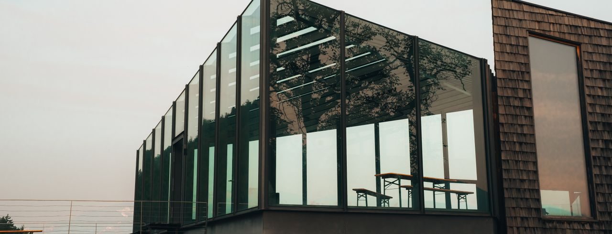
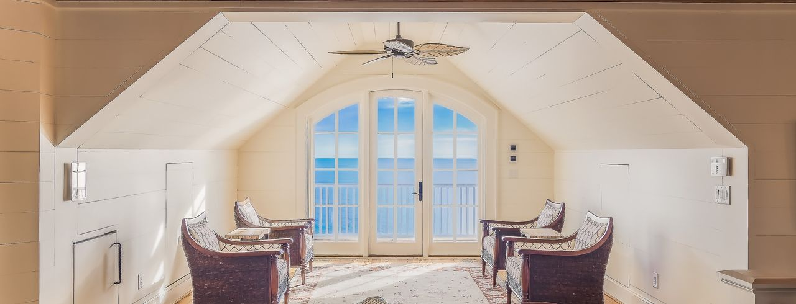
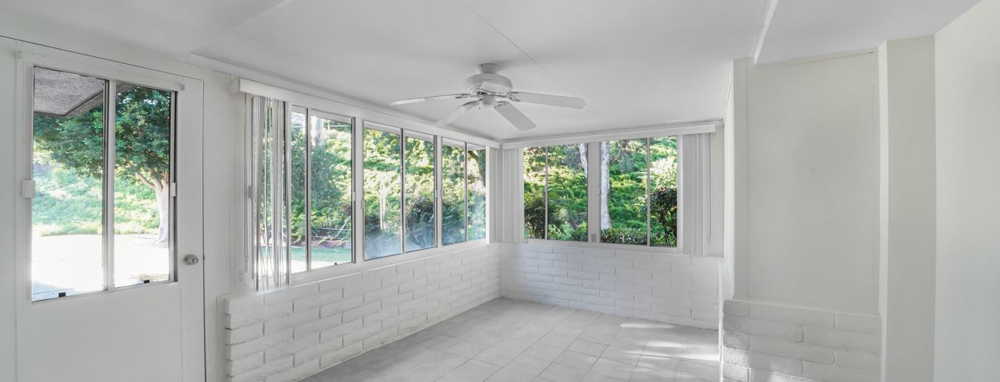
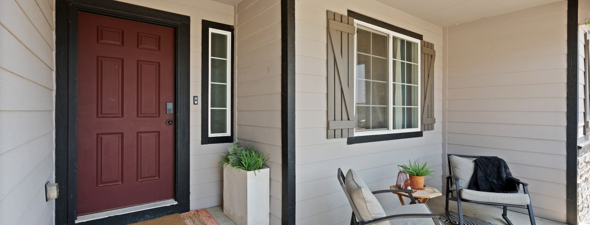
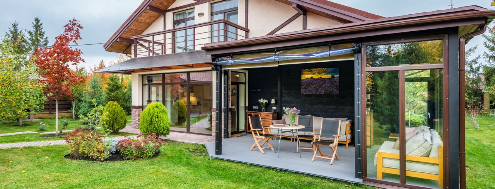
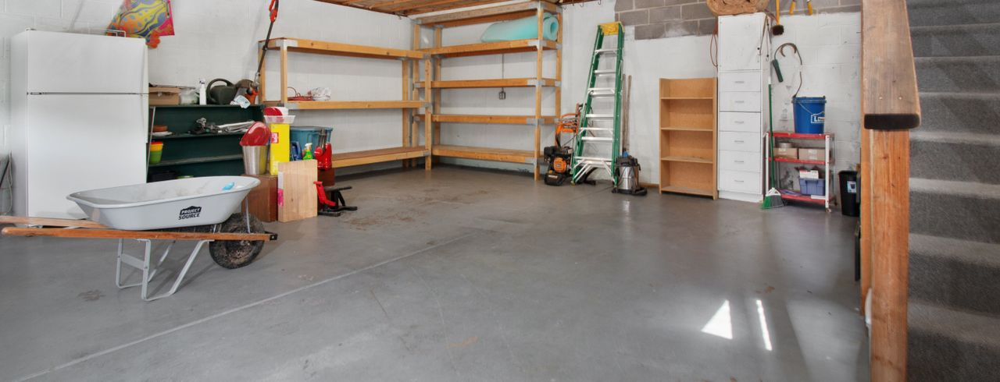

The two questions we’re asked most, for six common projects. We’ve deliberately avoided quoting prices: every home and site is different, and a guess is not a quote. Instead we explain what drives the cost — then give you a fixed price after a free home visit.
Please note: this is general guidance for homes in England, written to help you plan. Planning and building regulation rules change, and local authorities (including London boroughs and councils in Surrey and Kent) apply them to individual properties differently. Always confirm with your local planning authority and building control before you commit. We can prepare planning applications and building regulation approvals as part of our Design service.

House extensions
More internal space — and potentially added value on your home’s sale price should you decide to move.
Cost
How much does an extension cost?
There is no honest single figure. Extension costs vary widely with size, design and specification, and where you live. These are the factors that move the price most:
Size and height. Floor area is the starting point; a two-storey extension involves more structure, roof and scaffolding.
Ground and foundations. Soil type, nearby trees and drains can change the foundation design.
Structural work. Opening up the existing rear wall usually needs steelwork and temporary support.
Roof and glazing. Flat or pitched roofs, rooflights, bi-fold or sliding doors vary hugely in cost.
Fit-out. A new kitchen, bathroom, flooring and decoration often cost as much as the shell.
Services. Moving radiators, drainage, gas, electrics and plumbing.
Fees and approvals. Design, planning and building control fees, structural engineer, and party wall surveyors if needed.
Our approach: a free home visit, then a clear fixed quote showing precisely what we’ll do for the price — and no extras later.
Planning
Do I need planning permission for an extension?
Many single-storey extensions to houses can be built under “permitted development” rights without a full planning application, but only if strict conditions are met. Commonly, these include:
Limits on how far a rear extension projects and how high it is (including eaves height close to a boundary).
Side extensions generally limited to single storey and no wider than half the width of the original house.
Nothing forward of the main front wall facing a highway, and not covering more than half the garden area with buildings.
Materials that are similar in appearance to the existing house.
Tighter rules for two-storey extensions.
When permitted development may not apply
Flats and maisonettes, and listed buildings.
Conservation areas and other designated land, which have extra restrictions.
Properties where rights were removed by a planning condition or an Article 4 direction.
Houses already extended — earlier work counts toward the limits.
Building regulations apply to virtually all extensions whether or not planning permission is needed. If you share a wall or dig near a neighbour’s foundations, the Party Wall etc. Act may also apply.
Not sure? A Lawful Development Certificate from your council confirms in writing that your plans are lawful. We can arrange this, or a full planning application, for you.

Loft conversions
Turn unused roof space into a bedroom, office or bathroom without losing garden or driveway.
Cost
How much does a loft conversion cost?
Prices depend heavily on what your roof allows. The main drivers are:
Type of conversion. Rooflight conversions are generally the simplest; dormers, hip-to-gable and mansard conversions add space and cost.
Roof structure. Modern trussed roofs need more structural alteration than traditional cut roofs.
Head height and floor strength. New floor joists and steel beams are usually required.
Staircase and fire safety. A new stair, protected escape route, fire doors and smoke detection.
En suite or bathroom. Adds plumbing, drainage and tiling.
Insulation, heating and electrics. Needed to meet thermal and safety standards.
Access. Scaffolding and how materials get to the roof.
Fees. Design, structural calculations, building control and any party wall costs.
After a free home visit we give you a fixed quote for the whole conversion, so the price you agree is the price you pay.
Planning
Do I need planning permission for a loft conversion?
Many loft conversions can be carried out under permitted development, provided conditions are met. Commonly cited conditions include:
A limit on the additional roof volume (commonly 40 m³ for terraced houses and 50 m³ for semi-detached and detached houses, including any earlier roof extensions).
No extension beyond the plane of the existing roof slope on the front elevation facing a highway.
The extension must not be higher than the highest part of the existing roof.
Materials similar in appearance to the existing house; no verandas or balconies.
Side-facing windows obscure-glazed and, generally, non-opening.
When it may not apply
Flats and maisonettes, and listed buildings.
Conservation areas and other designated land.
Where permitted development rights have been removed.
Building regulations approval is needed for a loft conversion — covering structure, fire safety and escape, stairs, insulation and sound. If you share a party wall, the Party Wall etc. Act may apply. Bats and their roosts are protected: if you suspect them, seek specialist advice before work begins.

Conservatories
More space and natural light, bringing the garden into your home while keeping you protected from the elements.
Cost
How much does a conservatory cost?
“Conservatory” covers a wide range, from fully glazed lean-tos to solid-walled orangeries, and the cost spreads accordingly. What matters most:
Type. A glazed conservatory, a sun room with a solid roof, and an orangery with solid walls and a roof lantern are very different builds.
Size and roof style. Lean-to, Edwardian and gable styles cost differently.
Frame material. uPVC, aluminium or hardwood.
Glass specification. Glass roofs cost more than polycarbonate but look better; solar-control and thermally efficient glazing add cost and comfort.
Base and floor. Foundations, floor build-up and finish.
Heating and electrics. Lighting, sockets and heating all add to the total.
We’ll visit, agree your wish-list and give you a fixed price — whichever style you choose.
Planning
Do I need planning permission for a conservatory?
A conservatory is treated like any other single-storey extension for planning. It may be permitted development if it respects limits on:
Depth from the rear wall, and overall and eaves height.
Distance from boundaries and the highway — not forward of the front wall that faces a road.
The proportion of the garden already built on.
Designated land (such as conservation areas), listed buildings, and properties where rights have been removed.
Building regulations: a conservatory at ground level may be exempt if it is under 30 m², separated from the house by external-quality walls, doors or windows, and substantially glazed. If you open up the wall into the house, or remove those doors and windows, building regulations are likely to apply. Heating, electrical safety and safety glazing rules still apply.
Always check with your local authority — then let us handle the build, to your fixed price.

Porches
A place for shoes, coats and umbrellas, less draught and heat loss around the front door — and extra security.
Cost
How much does a porch cost?
Porches are among the smaller projects, but cost still depends on:
Open canopy or enclosed room. An enclosed porch needs walls, a door and glazing.
Construction. Brick or block to match the house, timber frame or uPVC.
Foundations and groundworks. Even a small porch needs a proper base.
Roof finish. Tiles, slate, flat roof or glazing.
Doors and windows. Specification and security rating.
Matching your existing home. Brickwork, render and tiles to blend in.
Electrics. Lighting and sockets.
Small job, same promise: a fixed price, a tidy site and a programme you can plan around.
Planning
Do I need planning permission for a porch?
Porches can often be built as permitted development, but the limits are tight. Commonly cited conditions:
A small footprint — typically not more than 3 square metres measured externally.
No part more than 3 metres above ground level.
Not within 2 metres of any boundary beside a highway.
A larger porch, or one that doesn’t meet these tests, will need planning permission. Flats, listed buildings, conservation areas and properties where rights have been removed have additional restrictions.
Building regulations: small, ground-level porches are often exempt where the existing front door is kept, but check — particularly if the porch is enclosed, heated or wired.
We can confirm which route applies to your home and prepare any application.

Garden buildings & granny annexes
Extra space separate from your home, but within the boundary of your garden or driveway.
Cost
How much does a garden building or annexe cost?
A garden office and a self-contained annexe are very different projects. The factors that matter:
Purpose. Storage or home office, versus somewhere people live and sleep.
Size and construction. Timber frame or masonry, and how well it is insulated.
Foundations and access. Ground conditions and how materials reach the site.
Services. Power, water, drainage and heating — and the distance to existing connections.
Internal fit-out. Kitchenette, bathroom, flooring and decoration.
Glazing and rooflights. Style and performance.
Landscaping. Paths, decking and making good the garden afterwards.
Tell us how you want to use the space and we’ll give you a fixed price.
Planning
Do I need planning permission for a garden building or annexe?
Outbuildings can be permitted development if they are for use incidental to the enjoyment of the house — a home office, gym, studio or store. Commonly cited conditions include:
Single storey, with limits on eaves and overall height (lower close to a boundary).
Not forward of the main front wall of the house.
No more than half the garden area covered by buildings.
No verandas or balconies; extra restrictions in conservation areas and for listed buildings.
A self-contained annexe — somewhere with its own sleeping and living accommodation — is generally not “incidental” use, so it usually needs planning permission. Councils differ, so talk to yours early.
Building regulations: small outbuildings without sleeping accommodation are often exempt, depending on floor area and distance from boundaries. Anything used for sleeping will need approval.

Garage conversions
With cars getting bigger, many garages are too small for their purpose. Converting one is an excellent way to extend your home quickly.
Cost
How much does a garage conversion cost?
Because the shell already exists, a conversion is often more economical than a new extension — but the price still depends on:
Garage type. Integral, attached or detached, and the condition of its structure.
The garage door opening. Replacing it with a wall and window needs new foundations and matching brickwork.
Floor. Damp-proofing, insulation and raising the floor level.
Walls and roof. Insulation to modern thermal standards.
Services. Heating, electrics, lighting, ventilation and any plumbing.
Finish and use. Playroom, office, bedroom or kitchen-diner.
Parking. Whether you need to re-provide off-street parking elsewhere.
After a free home visit we’ll give you a fixed price for the whole conversion.
Planning
Do I need planning permission for a garage conversion?
Converting an integral or attached garage into living space often doesn’t need planning permission when the external appearance barely changes. But check for:
A planning condition on the original permission requiring the garage or parking to be retained, or removing permitted development rights.
Changes to the front elevation that go beyond like-for-like materials.
Properties in conservation areas, and listed buildings.
Using the space as a separate home or for a business — which does need permission.
Local policies on off-street parking (especially in some London boroughs).
Building regulations approval is required for a garage conversion — covering insulation, damp-proofing, ventilation, fire safety, electrics and any structural changes.
Not sure about conditions on your property? We’ll help you find out before any money is spent.